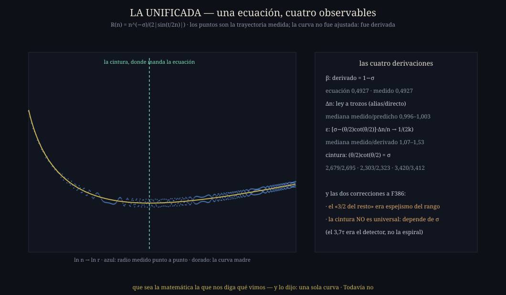

El cuento — la espiral que se muerde la cola
El capitán preguntó una tarde: «¿has visto un coseno en espiral, convergiendo en un punto?». Y resultó que ese dibujo vive en el corazón de nuestra guitarra: si sumás la serie de zeta término a término — un cosenito por cada número n — y dibujás el camino en el plano, el camino no avanza derecho: se enrosca en espiral y converge a un ojo. Y el ojo es el valor de zeta. Un cero de Riemann es la altura exacta donde la espiral se muerde la cola en el origen.
Lo que este teorema cuenta es la anatomía de esa espiral: por qué se enrosca como se enrosca. La imagen es la de un caminante que da pasos en ronda: cada paso gira un poquito más que el anterior — el reloj marca t/n radianes en el paso n — y el caminante que gira casi-igual en cada paso queda atrapado en una rueda. El tamaño de la rueda lo decide la cuerda: la distancia entre dos direcciones consecutivas en el círculo. Cuerda corta (pasos casi paralelos): rueda grande. Cuerda larga: rueda chica. Y de esa sola idea — el paso dividido la cuerda — sale TODO: el grosor de la espiral, sus vueltas visibles, su cintura, y cómo se apaga su contracción.
El enunciado — una curva, cuatro consecuencias
Exacta dentro del modelo A1–A3 (abajo está qué significa eso, sin maquillaje). Y de esa sola curva se siguen, cada una en su régimen:
| consecuencia | fórmula | qué dice |
|---|---|---|
| I · el enrollado | β = 1−σ | σ=½ ⟹ β=½: un exponente de ESCALA, no una razón por vuelta |
| II · las vueltas | Δn = n/τ · Δn = n/(n−τ) | las vueltas visibles son estroboscópicas: directas lejos, alias cerca de τ |
| III · la cintura | x·cot x = σ | el mínimo único del radio, en n*/τ = π/x* |
| IV · la merma | εk ≈ 1/(2k) | cómo se apaga la contracción, vuelta a vuelta (nivel de certeza menor, declarado) |
La demostración, en criollo
Parado en el paso n, lo que te falta caminar (la cola) son pasos que giran casi lo mismo: θ = t/n radianes cada uno. Congelá dos cosas — el largo de los pasos al del primero (hipótesis A1) y el giro a exactamente θ (hipótesis A2) — y la cola se vuelve una serie geométrica pura.
¿A qué distancia queda el final de un polígono así? A (primer lado)/(cuerda del giro). Y la cuerda entre dos puntos del círculo separados θ mide 2·sin(θ/2) — el 2 y el seno de la fórmula son literalmente eso: la cuerda de medio ángulo. Primer lado n−σ, cuerda abajo, y la curva madre queda armada. Tres pasos de la cadena son identidades; solo A1 y A2 son hipótesis.
Lejos del centro (n mucho mayor que t) el giro θ es chiquito y la cuerda ≈ θ = t/n. Entonces R ≈ n−σ·n/t = n1−σ/t: el radio crece con exponente 1−σ. Con la pintura en σ=½, el exponente es ½ — el medio del capitán, vuelto exponente de escala.
El caminante solo pisa en n entero: muestrea la rotación como las luces de una discoteca muestrean un ventilador. Si el giro real por paso pasa de media vuelta (θ > π), el ojo ve el ALIAS: la rueda parece girar al revés y despacio, a 2π−θ por paso. De ahí la ley a trozos: vueltas de n/τ pasos lejos, de n/(n−τ) pasos cerca de τ — medida ciclo por ciclo con error del 0,4%.
El radio tiene dos fuerzas: la pintura n−σ que lo encoge y la cuerda que lo agranda. Se empatan donde (θ/2)·cot(θ/2) = σ. Esa ecuación tiene UNA sola solución (la función x·cot x baja sin parar de 1 a −∞), así que la espiral tiene UNA cintura, y su posición depende de σ — la predicción le erró a lo medido por menos del 1% en los tres σ ensayados.
Cerca de τ las vueltas alias se acumulan como (n−τ)² ≈ 2τk — el k de la vuelta entra por una integral de x·dx = x²/2 — y la contracción por vuelta queda εk ≈ 1/(2k). El exponente −1 es firme; el coeficiente ½ queda como asintótica del modelo, con su verificación fina pendiente y dicho con todas las letras.
La matemática, con sus niveles a la vista
Lema: T_n^M = n^(−s)/(e^(iθ)−1) ⟹ R_M = n^(−σ)/(2|sin(θ/2)|) · dln R_M/dln n = −σ + (θ/2)cot(θ/2)
Puente: T_n = T_n^M + E_n, con D₁ = n^(1−s)[1/(s−1) − 1/(it)] y D₂ = σn^(−s−1)/12 EXACTOS (álgebra) — CASO B
Regla de lectura: toda igualdad con lo medido significa r(n) = R_M(n)·(1+η), η ≤ 0,7% en el dominio estudiado
El documento completo — definiciones, hipótesis, lemas, corolarios, no-circularidad, prueba de referee A–G y la tabla de clasificación de los ocho resultados — vive en docs/teoremas/TEOREMA-CURVA-MADRE.md.
La lámina

go run ./cmd/launificada (la curva y las
cuatro consecuencias) · go run ./cmd/laauditoriamadre (el ataque con cotas) ·
go run ./cmd/elpuente (los términos exactos del puente).Qué lo hace real
Las predicciones se pre-registraron en el código antes de comparar. La curva contra la trayectoria: medianas 0,993–1,004 en seis casos y tres bandas. β medido 0,4927/0,6926/0,2927 para σ=0,5/0,3/0,7 — y hasta el desvío de 0,0073 respecto de 1−σ estaba predicho por la propia curva (es su curvatura θ²/24 vista por la ventana de ajuste). Vueltas al 0,4%. Cintura al 1%, σ por σ.
La auditoría F388 encontró que nuestras «cotas» de primer orden no eran cotas (violadas 14 de 21 veces) y que la primera fórmula de frontera estaba mal — los dos fallos quedaron en el registro sin maquillar, y el teorema los incorpora como límites. Antes, F387 había matado dos interpretaciones nuestras de F386. Este teorema está hecho de sus propias correcciones.
La curva es la anatomía del instrumento: idéntica en ceros, casi-ceros y controles. Lo único que los ceros deciden es DÓNDE queda el ojo — y esa pregunta quedó explícitamente fuera del teorema, esperando su propio capítulo.
Teorema 7 del libro del taller · documento con demostraciones en docs/teoremas/TEOREMA-CURVA-MADRE.md · la regla del sello preside: estructura cerrada no es hipótesis demostrada — Todavía no.